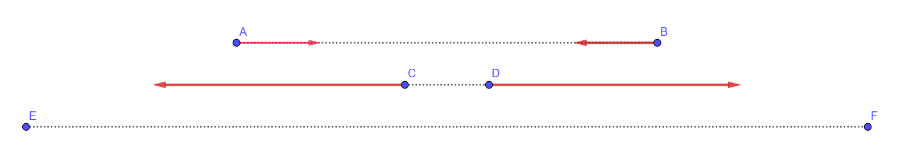
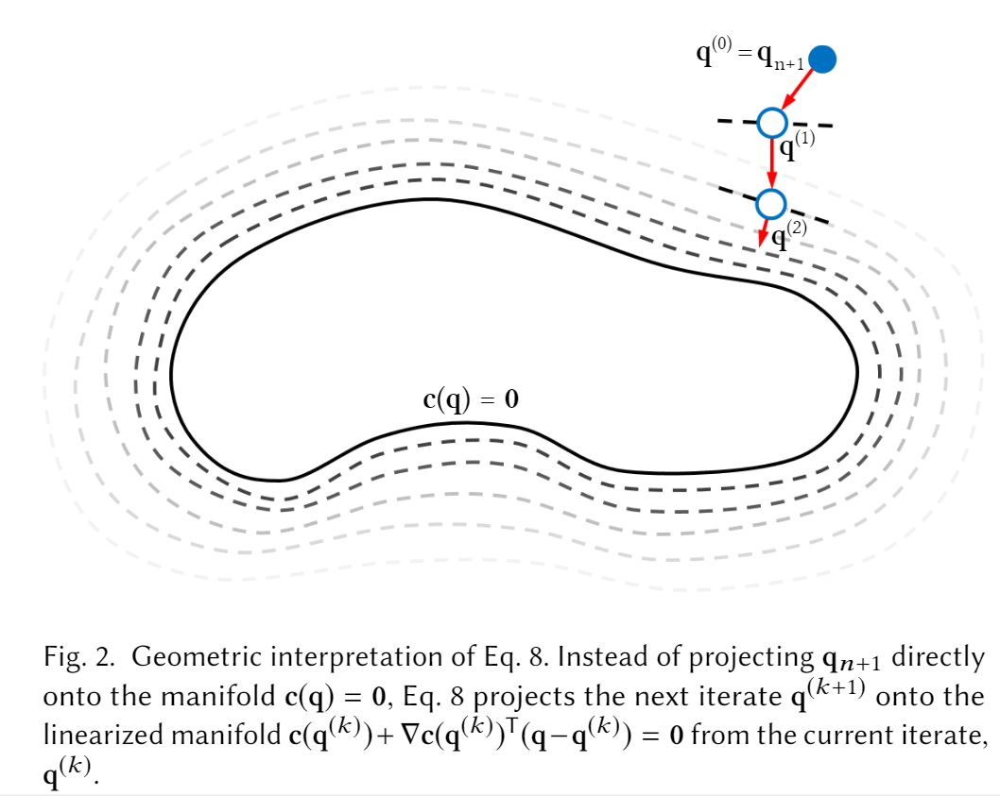

#! https://zhuanlan.zhihu.com/p/350170106
本文是对FEPR的论文阅读。不过我会加入大量自己的理解，也只会解释文中我感兴趣的部分，所以与原文的结构会有大幅出入，内容上也仅仅是有交集而已。本文并非翻译性质的、重新解读性质的论文阅读。但本文中所使用的方法都与原文中的相同。
一、FEPR的出发点：时步间的能量守恒
（这一章很多地方都是基础知识，只是为了完整性，所以才写在这里）
考虑一般的物理模拟中每个时步的积分计算过程：
xn+1=xn+∫tntn+1v(t)dt
为求解这一积分，我们都使用数值积分的方法，例如显式欧拉法：
xn+1=xn+vnΔtvn+1=vn+anΔt
但这一近似方法的稳定性很差，也就是指，如果步长Δt过大的话，就会发生“数值爆炸”的情况。（注意，在物理模拟中的“稳定性”通常是比数值分析中的“稳定性”更加宽泛的一个概念，而不仅仅是指由计算机字长有限导致的舍入误差）
- “数值爆炸”：可以用一个简单的模型直观地有个理解：假设有两个由一根弹簧相连的小球，它们一开始有一个“适当的”距离，在这距离上，两小球会被弹簧稍稍拉近，也就是an是一个适中的数值。但因为步长Δt比较大，导致小球一下子就有了很高的速度，也就是vn+1变得比较大。这就导致在计算xn+2=xn+1+vn+1Δt时，x的变化量也会比较大，也就是这两个小球一下子就被拉得很近。因为靠得很近，所以此时弹簧的排斥力也会很大，也就是an+1很大，这也就导致vn+2也变得很大。以此类推，按理来说应该在小范围内作振动的两个小球，它俩的振动幅度却变得越来越大。

要避免“数值爆炸”的情况，就需要将步长Δt设得足够小，但是这样的话，需要进行的迭代次数就会增多，开销就会增大。所以就有人开始使用隐式的数值积分法。例如向后欧拉法：
xn+1=xn+vn+1Δtvn+1=vn+an+1Δt
因为an+1与xn+1相关，所以为了求解xn+1，将上式的vn+1用下式代换掉，就得到一个方程：
xn+1=xn+(vn+an+1Δt)Δt
因为通常an+1与xn+1的关系都是非线性的（例如胡克定律的am=k(∣∣xb−xa∣∣−l0)），所以该方程通常也都是非线性方程。
如果直接使用牛顿法之类的迭代法求解该非线性方程的话，开销是极大的。而我们使用隐式方法的目的就是为了在保障数值稳定的情况下，使用较大步长，从而减小开销。如果求解非线性方程的开销很大的话，这一目的就无法实现了。
所以通常都会用些近似方法来求解该非线性方程，例如将an+1与xn+1的关系线性化：将an+1在xn泰勒展开，并只保留一阶项，也就是an+1≈an+∂x∂a∣xn(xn+1−xn)。
但线性化这类的近似方法就会使得这一数值积分计算过程变得并不是真正的隐式方法了，从而也就失去了稳定性的保证了。
例如对于线性化而言，我们实际上是“低估”了an+1，将它关于xn+1呈非线性的部分都删掉了，如此求解出来的xn+1会与真的用隐式方法求出来的不同。
总结一下就是：不管是显式方法还是隐式方法，在时间预算很小的情况下，前者需要使用较大步长，后者需要使用近似方法，导致都很难保证稳定性，都容易发生“数值爆炸”情况。
除此之外，哪怕真的使用隐式方法进行求解，隐式方法还存在“数值耗散”的问题（即原论文中的artificial dumping）。它与数值爆炸对称，指的是数值逐渐趋向于0的现象。
- “数值耗散”：也可以用上面的简单的模型直观地有个理解：依然是有两个小球由一根弹簧相连，它们一开始有一个“适当的”距离。想象没有任何外力的情况下，两个小球各自有一个“平衡点”，然后各自沿着这个平衡点在振荡。
- 在接近平衡点的过程中，小球加速；在远离平衡点的过程中，小球减速。回顾向后欧拉法的速度公式：vn+1=vn+an+1Δt，注意到an+1用的是下一时刻的位移来计算的。
- 在小球接近平衡点的过程中，下一时刻的位移带来的加速度an+1总是小于当前时刻的位移带来的加速度an，所以接近过程中v的增幅小于它本应有的增幅；
- 在小球远离平衡点的过程中，an+1总是大于an，所以远离过程中v的减幅总是大于它本应有的减幅。
- 这两重效果叠加起来的结果就是小球的速度越来越小，小球的振幅也就越来越小了。
不管是数值爆炸还是数值耗散，我们会觉得它们是问题，都是因为它们不符合能量守恒定律：例如对于上面的弹簧小球模型，数值爆炸时两个小球的动能都远超它们最开始具有的弹性势能；数值耗散时两个小球最开始具有的弹性势能最后都不知道跑去哪里了。
FEPR的出发点就是在每一个时步的积分计算后，通过调整系统状态（位移、速度等）来删掉“多出来的”能量，或者补充“少了的”能量，使得在任意时步之间，系统的能量守恒。
二、系统状态调整的方向
1. 系统状态变动程度的最小化
为了实现时步间能量守恒，需要调整系统状态，但哪怕系统状态只有一维，例如只有x轴位移，也需要知道是往x轴正向还是往x轴负向调整。也就是说，需要知道往哪个方向调整能够实现能量守恒。
在这之上，因为系统状态通常维数都比较高，像是三维空间中的位移和速度，如果系统中有n个质点的话，就需要位移3n个、速度3n个，共计6n个维数。而能量守恒的维数通常其实就只有一维：H(x,v)=H(xn,vn)，H为标量函数，表示系统机械能总和，(x,v)为调整后的系统状态，(xn,vn)为上一时步最终的系统状态（也就是上一时步中调整后的系统状态）。所以要调整系统状态来满足能量守恒的话，其实存在无数种调整方法。（可以理解为要求解方程组，能量守恒就给定了只有一个式子的方程组，而未知量却有6n个，此时方程组有无穷解）
为此，需要我们选定一个方向来调整系统状态。
这一问题也可以换一个角度有直观的理解。想象由系统状态(x,v)构成的6n维空间，每一个点都对应一个特定的系统状态。使能量守恒H(x,v)=H(xn,vn)的点的集合就构成这个空间中的一个流形（流形想象成是高维空间中的曲面就行了，差不多的东西）。所谓调整系统状态使其能量守恒，就是想让现在的系统状态(xn+1,vn+1)落到这个流形上。设其落点为(x,v)，那么我们很直观地就可以有一个想法：(xn+1,vn+1)和(x,v)应该尽量接近，减小我们这一过程对运动的干涉。
原论文中就据此有了第一个调整方向的规定：使调整后的系统状态(x,v)与调整前的系统状态(xn+1,vn+1)尽可能接近。（具体的数学表示在下一章再进行）
2. 动量守恒、角动量守恒
一个系统在合外力为零、合外力矩为零的情况下应该满足动量守恒、角动量守恒，很显然，在我们调整系统状态时是没有啥外力、外力矩的，所以我们在调整系统状态的时候也应该使动量守恒、角动量守恒。毕竟我们调整系统状态本身就是为了让能量守恒，如果因此而让其他本应守恒的东西变动了，那就本末倒置了。
但是我们不能像能量守恒那样直接让调整后的动量、角动量等于上一时步的动量、角动量，因为动量、角动量在时步之间是会发生改变的。举个例子，当重力势能做功时，虽然势能转换成动能，使得时步间能量守恒，但是因为速度增大了，所以动量也增大了，时步之间动量并不守恒。
为了方便，我们记动量为P(v)，角动量为L(x,v)。
注意到我们其实并不是想让时步之间的动量守恒，而是我们调整系统状态的过程中动量守恒。也就是我们想要的是P(v)=P(vn+1)，vn+1为调整前的系统速度。
但就如同数值积分过程无法保证能量守恒一般，数值积分过程也无法保证动量计算的正确性。例如在数值膨胀过程中，速度vn+1会突然变得很大，这就导致动量P(vn+1)也突然变得很大，而实际应得到的动量其实没那么大。这种情况下，因为我们要求时步间能量守恒，而上一时步中由于vn较小，动能也就较小，所以这一时步应该有的能量也会比较小，但是因为这一时步的动量非常大，质量又不变，所以这一时步的动能就会非常大。同时要求很少的能量总和与非常大的动能的话，就可能导致其他的能量，例如势能之类的，出现异常值。例如重力势能Ep=mgh可能会变成负数以抵消过大的动能。最终就导致想调整系统状态使能量守恒的这一目的无法实现。
简单来说就是因为我们不知道实际该有的动量是多少，导致我们无法实现调整过程的动量守恒。
原论文中给出了一种近似方法：作者假设应有的动量为上一时步的动量P(vn)与这一时步未调整动量P(vn+1)的线性插值：P(v)=P(vn+1)+s(P(vn)−P(vn+1))，其中s为一个比例系数。
角动量也是同理：L(x,v)=L(xn+1,vn+1)+t(L(xn,vn)−L(xn+1,vn+1))。
原论文中就由此得到了第二个调整方向的规定：调整过程中系统动量、角动量守恒。
3. 辅助变量的正则化项
上一节中为了能够得到应有的动量、角动量值，我们引入了辅助变量s,t，但这两个变量其实也是未知量，是求不出来的。理想情况下，应该找到s,t使得近似出来的动量、角动量尽可能接近应有的动量、角动量，但是因为后者我们无法计算，所以这一尝试就无法实现。
因此我们换个角度考虑求它俩的方法：之所以引入它们很大一个原因是因为不引入它们的时候，可能会无法实现时步间能量守恒。换句话说，只要能实现能量守恒，那其实也不是很需要它们。
所以这里就与前文中考虑系统状态变动程度的思路一样，我们希望这两个变量带来的变动程度也都尽量小。而这两个变量都是很直接的比例系数，数值越大，变动程度就越大。
原论文中就由此得到了第三个调整方向的规定：调整过程中辅助变量的数值规模尽可能小。
三、FEPR方法的形式化表述
上一章中我们在概念上描述了系统状态调整过程应该满足的条件，这里总结一下：
- 调整后的能量等于上一时步结束时的能量
- 因为调整而引起的系统状态变动程度尽可能小
- 调整过程中动量、角动量守恒
- 上一条件中引入的辅助变量的数值规模尽可能小
原论文中是更加一般化的表述，是还能应用在FEM中的表述方法，不过因为我对FEM并不是很熟悉，所以这里我将原论文中的表述稍微具体化一点。我假设系统为粒子系统，由一组质点构成。
首先先对系统状态进行形式化表述。设系统中有N个粒子，每个粒子的位移为xi∈R3, 速度为vi∈R3, 质量为mi∈R, i=1,2,...,N，都为列向量。并设x=⎣⎢⎢⎡x1x2⋮xN⎦⎥⎥⎤, v=⎣⎢⎢⎡v1v2⋮vN⎦⎥⎥⎤。设质量矩阵（称呼很多，原论文中称为nodal masses for mass-spring systems）：
M=⎣⎢⎢⎡M1M2⋱MN⎦⎥⎥⎤
其中Mi为：
Mi=⎣⎡mimimi⎦⎤
设系统总势能为E(x)，系统总动能为21∣∣v∣∣M2，系统机械能为H(x,v)=E(x)+21∣∣v∣∣M2。其中∣∣v∣∣M2=vTMv。这里动能的表示我一开始看不太懂，乘开来以后其实就是每个粒子的动能和。
设系统动量为P(v)=∑imivi，系统角动量为L(x,v)=∑ixi×mivi。
然后我们一个个看要满足的条件：
1. 能量守恒
要求调整后的能量等于上一时步结束时的能量，也就是要求满足约束：
H(x,v)=H(xn,vn)
- 写到这里，我突然发现这边记号有点混乱，所以插一句。原论文中的(xn,vn)与(xn+1,vn+1)是沿用自数值积分中的记号，如果是一般的方法的话，那它们分别对应第n次、第n+1次时步迭代后的系统状态。但因为我们这里在数值积分后还有个调整过程，所以(xn+1,vn+1)并不表示第n+1次时步迭代后的系统状态。可以理解为这边的序号并没有顺序关系，例如，并不存在(xn+2,vn+2)。
2. 变动程度尽可能小
要求点(x,v)尽可能靠近(xn+1,vn+1)，这里先直接写上原文中给出的式子：21∣∣x−xn+1∣∣M2+2h2∣∣v−vn+1∣∣M2
- 事先声明：原论文中说是引用了Long-time energy conservation of numerical integrators中的投影方法，但是我跑去读了读那篇几乎看不懂的论文以后，在我看来，那篇论文中关于投影到恒能流形(constant-energy manifold)的部分仅有1.1.3节，其中所使用的方法可以说是只用了一个词, orthogonally, 来概括。所以这边基本都是我根据上式的几何意义与orthogonally的关系脑补出来的，若有不对，恳请指正。
要两点尽可能靠近，一个直观的想法就是欧几里得距离的最小化。设点x,y，也就是想要让∣∣x−y∣∣最小化（使用欧几里得范数），平方一下展开的话就是：(x1−y1)2+(x2−y2)2+(x3−y3)2，其中x=(x1,x2,x3),y=(y1,y2,y3)
这里也是一样的，要让(x,v)尽可能靠近(xn+1,vn+1)，就是要让∣∣x−xn+1∣∣2+∣∣v−vn+1∣∣2最小化。为了方便后续叙述，记\Delta x=x-x_{n+1}=[\Delta x_1\ \Delta x_2\ \dots\ \Delta x_N]^T, \Delta v=v-v_{n+1}=[\Delta v_1\ \Delta v_2\ \dots\ \Delta v_N]^T，那么要最小化的就是∑iΔxi2+∑iΔvi2
注意到哪怕两个粒子的位移程度相同，如果它们质量不同的话，那么对系统产生的影响也是不同的：直觉上就能感觉出来，质量越大，产生的影响越大。因此原论文中使用了被其称为mass-weighted norm的技术，将质量作为系数放了进去。
具体来说就是每个粒子的质量乘上它自己的位移变化量和速度变化量，最小化量变成：
i∑miΔxi2+i∑miΔvi2=ΔxTMΔx+ΔvTMΔv=∣∣Δx∣∣M2+∣∣Δv∣∣M2=∣∣x−xn+1∣∣M2+∣∣v−vn+1∣∣M2
然后原论文中建议给速度乘上h2，从而统一单位，这有利于计算，最小化量也就变成：
∣∣x−xn+1∣∣M2+h2∣∣v−vn+1∣∣M2
最后关于原论文的式子里的21，我是觉得没有必要，毕竟是要最小化它，那两倍还是一倍不是一样的吗.jpg
3. 动量、角动量守恒
根据上一章的论述，我们使用插值来近似时步n+1结束时系统应有的动量、角动量。那么调整过程中动量、角动量守恒，也就是要满足约束：
P(v)L(x,v)=P(vn+1)+s(P(vn)−P(vn+1))=L(xn+1,vn+1)+t(L(xn,vn)−L(xn+1,vn+1))
（NOTE: 这里是个可做的点，这里用的是近似动量，如果对于某些特定的问题能用精准的动量的话，效果理论上会更好。另一个着眼点是这里都是整个系统的守恒问题，而对于每个粒子个体而言也应该在一定程度上有守恒情况。）
4. 辅助变量的规模尽可能小
对于上一节中引入的辅助变量s,t，要使其数值规模尽可能小，那很直接的方法就是取绝对值，然后加起来：
∣s∣+∣t∣
注意到这也是个最小化量，然后前面关于系统状态变动程度那部分也是一个最小化量，那我们当然希望能把这俩玩意儿放一块儿最小化。
最直接的想法就是把它俩给加到上式中去，变成：
∣∣x−xn+1∣∣M2+h2∣∣v−vn+1∣∣M2+∣s∣+∣t∣
不过很明显，这样不太规整，优化过程中可能会出现问题。
- 举个例子，假设要最小化a和b这个量，其中a的数量级是10，b$的数量级是108，那很显然如果通过最小化a+b来同时最小化这两个量的话，那最后基本上只有b被最小化了，而a基本是被忽略掉了的。所以这样通过加法合起来一起最小化的量，在规模上应该差不多。
因为前面位移、速度啥的都是平方了，所以这里也平方：
∣∣x−xn+1∣∣M2+h2∣∣v−vn+1∣∣M2+s2+t2
与给速度变化量乘上h2一样，这里也需要统一单位，为了实现这一目的，原论文中引入了被其称为“regularization weight”（正则化权重）的量。我简单调查了下，正则化这个概念虽然很普遍，不过这边作者的这个权重应该是他自己凑出来的，应该并没有参照什么公式。
前面两项的单位是kg⋅m2，而辅助变量s,t都是无单位的，所以正则化权重的单位得是kg⋅m2。原论文中使正则化权重ϵ为：
ϵ=cmr2
其中
- c为手动调整的常系数。
- m=∑imi为质量和
- 这里可能会有疑问，前面每个粒子的位移、速度都是三维向量，所以每个粒子都乘了六次质量。那这边是不是应该是6倍质量才能规模一致？我觉得确实如此，不过因为前面已经有个c包含所有常系数了，所以这边不需要再乘6了。
- r为物体在rest state时的包围球的半径。也就是物体变形前，物体中离原点最远的点到原点的距离。如果点的分布比较均匀的话，那它总是与前面的x等规模，毕竟它近似可以看成是x的最大值么。
则最终的最小化量就是：
∣∣x−xn+1∣∣M2+h2∣∣v−vn+1∣∣M2+ϵ(s2+t2)
5. 最终形式
统合上面各节所给出各约束、各最小化目标，得到最终的最优化问题：
x,v,s,tmin subj. to ∣∣x−xn+1∣∣M2+h2∣∣v−vn+1∣∣M2+ϵ(s2+t2)H(x,v)=H(xn,vn)P(v)=P(vn+1)+s(P(vn)−P(vn+1))L(x,v)=L(xn+1,vn+1)+t(L(xn,vn)−L(xn+1,vn+1))
四、最优化问题的求解
首先进行一下记号的简化。
qqn+1Dcc(q)=[xT vT s t]T=[xn+1T vn+1T 0 0]T=diag(M;h2M;ϵ;ϵ):R6N+2→R7=0 iff⎩⎨⎧H(x,v)P(v)L(x,v)=H(xn,vn)=P(vn+1)+s(P(vn)−P(vn+1))=L(xn+1,vn+1)+t(L(xn,vn)−L(xn+1,vn+1))
则最优化问题可表述为：
qminsubj. to∣∣q−qn+1∣∣D2c(q)=0
1. 基本SQP方法
【事先声明，我没咋看明白SQP方法，下文中可能有不严谨、甚至错误的地方，如果发现的话，恳请指正。】
作者使用被称为Sequential Quadratic Programming(SQP)的方法来求解该最优化问题。关于该方法，我主要参考了下面两个链接：
设G(q)=∣∣q−qn+1∣∣D2，要使它最小化，就是要求它的极值。另一方面我们还有个等式约束c(q)=0。解决这一问题的方法就是拉格朗日乘子法(Lagrange Multiplier)，它的数学原理我也不懂，当初考研那会儿也只要求背下来公式。
该问题的拉格朗日函数为：
L(q,λ)=∣∣q−qn+1∣∣D2+c(q)Tλ
使其偏导为0：
⎩⎪⎨⎪⎧∂q∂L∂λ∂L=D(q−qn+1)+∇c(q)Tλ=c(q)=0=0
其中∇c(q)为雅克比矩阵，这里特地把它列出来，因为原论文中的雅克比矩阵的定义是这里的定义的转置，不过我这边的这个定义应该才是比较流行的定义：
\begin{aligned}
\nabla c(q) = \begin{bmatrix}
\frac{\partial c_1}{\partial q_1}
& \dots
& \frac{\partial c_1}{\partial q_{6N+2}} \\
\vdots & \ddots & \vdots \\
\frac{\partial c_7}{\partial q_1}
& \dots
& \frac{\partial c_7}{\partial q_{6N+2}}
\end{bmatrix}
\end{aligned}
接下来再用牛顿法来求解上面的方程组（作者称其为"Newton-KKT system"）：
⎣⎡D+i∑λi(k)∇2ci(q(k))∇c(q(k))∇c(q(k))T0⎦⎤⎣⎡q(k+1)−q(k)λ(k+1)−λ(k)⎦⎤=−[D(q(k)−qn+1)+∇c(q(k))Tλ(k)c(q(k))T]
（我并没有亲自动手算过，只是照搬了一下而已）
化简一下得到：
⎣⎡D+i∑λi(k)∇2ci(q(k))∇c(q(k))∇c(q(k))T0⎦⎤⎣⎡q(k+1)−q(k)λ(k+1)⎦⎤=−[D(q(k)−qn+1)c(q(k))T]
使用上式反复迭代得到使该问题的拉格朗日函数的偏导为0的点，即为所求极值点。（严格来说不一定是，拉格朗日函数偏导为0仅仅是极值点的必要条件。不过我们也不并不是那么严格地要求一定要是最小点，所以这里没有更进一步地检测了）
好，那么这一过程中似乎都没有提到SQP，那SQP到底是啥呢？按照我的理解，SQP方法在处理这一最小化问题时会退化成拉格朗日乘子法+牛顿法。也就是说，其实不用在意SQP方法是啥，因为我们的问题比较简单，只有等式约束，而SQP方法是能够处理包含非等式约束的情况的，所以SQP方法处理我们的问题时会退化成更简单的方法。
2. 近似加速
(1). 单步迭代的近似加速
然后作者指出要在迭代过程中反复求解上面的线性方程组的开销是巨大的，毕竟q要有6N+2维呢。
作者通过移除系数矩阵中的∑iλi(k)∇2ci(q(k))，将系数矩阵转变成了很简洁的形式：
[D∇c(q(k))∇c(q(k))T0]⎣⎡q(k+1)−q(k)λ(k+1)⎦⎤=−[D(q(k)−qn+1)c(q(k))T]
此时因为D为对角矩阵，所以其舒尔补很容易求解S=∇c(q(k))TD−1∇c(q(k))，利用舒尔补求解λ(k+1)，即要求解下面的方程组：
Sλ(k+1)=c(qk)T
因为λ是七维的，所以求解这个方程组的开销并不大。然后关于这一方法的可行性，作者指出S绝大多数时候都是正定的，从而绝大多数时候都是可逆的，所以该方程组绝大多数时候都是可以求解的。
- 关于S的正定性，因为我的线性代数已经忘得差不多了，所以没太看懂，姑且打个TODO，以后看明白了再来补写。
求解出λ(k+1)后，q(k+1)−q(k)的求解就很简单了，代入即可：
q(k+1)=qn+1−D−1∇c(q(k))Tλ(k+1)
综上，通过舍弃系数矩阵中的部分项，作者加速了牛顿法的每一次迭代。
(2). 迭代收敛的近似加速
虽然每步牛顿法的迭代速度加快了，但是因为收敛速度依然不够快，所以每一个时步迭代的开销依然很大。
作者观察到牛顿法迭代过程中存在振荡(oscillation)，他们注意到上一段中的近似可以等价为将约束c(q)=0在q(k)线性化，也就是上一段中的方程组为求解下面的最优化问题的迭代方程组：
qminsubj. to∣∣q−qn+1∣∣D2c(q)≈c(q(k))+∇c(q(k))(q−q(k))=0
因为约束被线性化了，导致迭代过程中，每一步的移动都很"wildly"，也就是迭代的前进方向受约束的影响很大，导致最小化目标函数的努力被抵消很多。结果就是收敛速度的缓慢。
- 这里原文中也没有做形式化的解释。(NOTE: 考虑更好地近似加速方法)
为了能更快地落到约束流形上，作者将每一步牛顿法迭代的起点改成q(k)：
qminsubj. to∣∣q−q(k)∣∣D2c(q(k))+∇c(q(k))(q−q(k))=0
原本的话，每次迭代都是在求一个从qn+1出发的向量，使其终点落到约束流形上，并且其"mass-weighted norm"尽量小（i.e. 长度尽可能短）。而这么修改以后，每次迭代都是从上一步迭代的结果q(k)出发寻找向量。每一步迭代都会接近流形，所以起点会越来越靠近流形，从而更容易找到这么一个向量。
原论文中的示意图非常形象，这里我就直接照搬了：

而这么修改了最小化问题的话，上一段中求解牛顿法的迭代方程组的式子也需要做相应地变动。为了完整性，这里写一下：
[D∇c(q(k))∇c(q(k))T0]SSλ(k+1)q(k+1)⎣⎡q(k+1)−q(k)λ(k+1)⎦⎤=−[0c(q(k)]=∇c(q(k))D−1∇c(q(k))T=c(qk)T=q(k)−D−1∇c(q(k))Tλ(k+1)
五、其他
1. 外力
外力就是指由系统外的物体作用到这个系统内部的力。举个例子的话，如果我们不把地球算进系统里的话，那重力就是个外力，不过如果算进来的话，那表现为万有引力的重力就也是个内力。对于内力，每种内力都对应一种势能，内力就是物体向处于势能最低点的状态运动的趋势，例如弹簧的弹力体现出来的是物体向弹性势能为0的位置运动的趋势。对于FEPR方法而言，简单地将这些势能算进E(v,s), 然后加进H(x,v)即可。对于外力也是一样的道理，没有任何区别。
2. Attachment（我想不出来好的翻译……）
Attachment就是unity之类的游戏引擎里所指的kinematical object，运动学物体。它们的运动状态不由物理模拟得出，任意时刻中它们的位置都被非物理的因素直接指定。例如，玩家可以点击屏幕直接拖动一块木板，点到哪里，木板就立即被拖到哪里，没有加速、减速的过程。这些attachment使得用户的交互变得更加便捷。
Attachment表现到FEPR方法中就是多几个约束。例如对于0号粒子，我们希望它的位置固定在(0,0,0)，那最小化问题就变成：
x,v,s,tmin subj. to ∣∣x−xn+1∣∣M2+h2∣∣v−vn+1∣∣M2+ϵ(s2+t2)H(x,v)=H(xn,vn)P(v)=P(vn+1)+s(P(vn)−P(vn+1))L(x,v)=L(xn+1,vn+1)+t(L(xn,vn)−L(xn+1,vn+1))x0=[0 0 0]T
3. 碰撞响应
碰撞的处理与attachment一模一样。在检测到碰撞后，就添加一个attachment约束，将碰撞点就近移动到平面上。
不过这一做法会使得求解最小化问题时出现振荡，因为最小化方向与这个attachment约束几乎是刚好相反的，两者的作用相互抵消了很多。为了避免振荡，作者引入"collision potential"（碰撞势能）来调整最小化方向，碰撞势能Ecol的定义为：
Ecol(x)={−((Sx−xsurf)Tn)30(Sx−xsurf)Tn<0otherwise
其中S为选择矩阵，Sx会得到只含有为碰撞点的顶点。xsurf为碰撞点投影到物体表面上的点，也就是我们希望把碰撞点移动到的位置。n是xsurf处的表面法线。
4. 阻尼
这部分我不是很了解，兴趣也不大，不做解释。